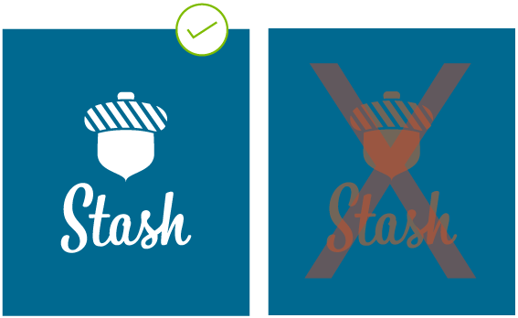
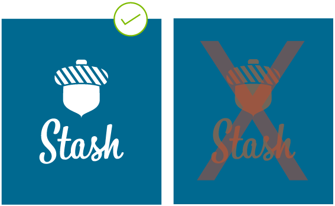

My Roles
- User Research
- UI/UX Design
- Branding
- Visual Design
- User Testing
Stash Cloud Storage
Stash is a cloud storage solution that helps busy people balance work and play by providing easy access to all of their content.
Problem
There are many cloud storage options available today, but many of them cater to specific needs, don't offer enough space, cost too much, or are difficult to use. Fore these reasons, and because the available options don't play well together, users end up storing their content in multiple places.
Solution
As the lead designer on this project, I studied existing brands, talked to potential users, planned, designed, and tested a new, user-centered solution for existing cloud storage woes. I developed a brand and a clickable prototype based on throughtful product insights and user-generated data.
Research + Planning
Building an MVP
At the very least, Stash needed to enable its users to:
- save links, images, videos, PDFs, and other content found on the web
- organize content using categories, tags, groups, or folders
- create notes, spreadsheets, and other documents
- upload and/or download videos, images, PDFs, and other files from any device
- share and/or receive single items, groups of items, or folders
- collaborate in a real-time to create new or edit existing content with other users
Analyzing the Competition
Exploring the strengths and weaknesses of contrasting heavyweights, I learned that the cloud storage services currently available offered similar things, yet focused their messaging on only one or two features and therefore eliminated large groups of users.
>> View Competitive AnalysisUser Survey
Results from the survey offered some key insights that challenged the original scope of the project.
>> View Complete Results62% of respondents said he/she looks for unlimited access to his/her content and data from any device.
93% of respondents said he/she is not willing to spend more than $10 per month on cloud storage.
94% of respondents stated that he/she currently and actively uses one or more cloud storage service.

User Personas
Stash users are frustrated when:
- personal or work content is not accessible on certain devices or is difficult to find
- apps are expensive, provide unneccesary features, have lengthy explanations, and don't offer enough storage space
- apps make it difficult to organize content and share with individuals or groups
High Priority User Tasks
Stash users need to be able to:
- set up and sign in/out of user accounts
- access content from multiple devices and operating systems
- create and share content with others
- choose/edit account and payment details and preferences
Sitemap + User Flows
Creating a sitemap helped to organize big picture content, create a hierarchy, and establish a system for navigation. With the structure laid out, I began piecing together the steps involved in completing the highest priority tasks—starting with hand-drawn sketches, and iterating until each path was smooth and logical.
>> View Sitemap + User Flows

Implementation + Early Testing
Clickable Wireframes
Building off of a content strategy and rapidly iterating to identify weak points and missed steps, Stash wireframes began with hand-drawn sketches and ended with clean and clickable wireframes.
>> View Wireframes
Testing Wireframes
Usability testing product wireframes provided valuable insight. Users pointed out issues to consider and suggested changes, such as:
- remove the words For Free from the Join button to avoid discouraging potential paying users
- swap the Create Account page with the Pick Your Plan one, allowing users to review their content before sharing personal details
- simplify screens containing multiple menus, eliminating potential confusion
Brand Development
Sketching + Logo Development
Looking back at the intitial list of competitors and at other successful brands, I began thinking about what Stash should look and feel like. After a bit of brainstorming, I began sketching and refining logo options.
Building a Style Guide
Refining brand ideas and sketches, I created a visual identity guide for those who use Stash assets, outlining color codes, explaining when, where, and how to use logos, and establishing hierarchy with brand typefaces.
>> View Style Guide
 

Execution + Testing
Mockups + Prototype
Borrowing insight from work done during the branding process and incorporating feedback from the user survey, I found a balance between organic imagery, clean lines, and white space when creating the visual design of the project.


Preference Testing
When I was uncertain about a detail during the design process, I asked users via A/B preference test to. While building Stash, I asked users for help:
- choosing between two image choices
- choosing between two icon styles
- choosing between two names fo the Stash dashboard
Usability Testing
Feedback received from users varied. One particular user participated in both the wireframe test as well as the prototype test, and noted familiar moments in the design and was able to point out whether improvements had been made. Others noted subtle things which made quite a difference in the final product, such as:
- the addition of a logout button (whoops!)
- clarifying call to action button terminology
- changing the method for editing content, resulting in the inclusion of a time stamp and a list organizing improvement
- reordering screens based on user status—new or returning
Conclusion
Stash was created to assist busy people, rather than make things more complicated and in its final form is a clean, organized, and user-centered solution that helps with existing cloud storage woes. While I’m happy with the final product, if I were to do it all over again, I’d push the app’s functionality further to give users something new.
Let's Work Together!
I'm always looking forward to my next adventure in design—other otherwise! Email me if you like my work and are interested in collaboating.